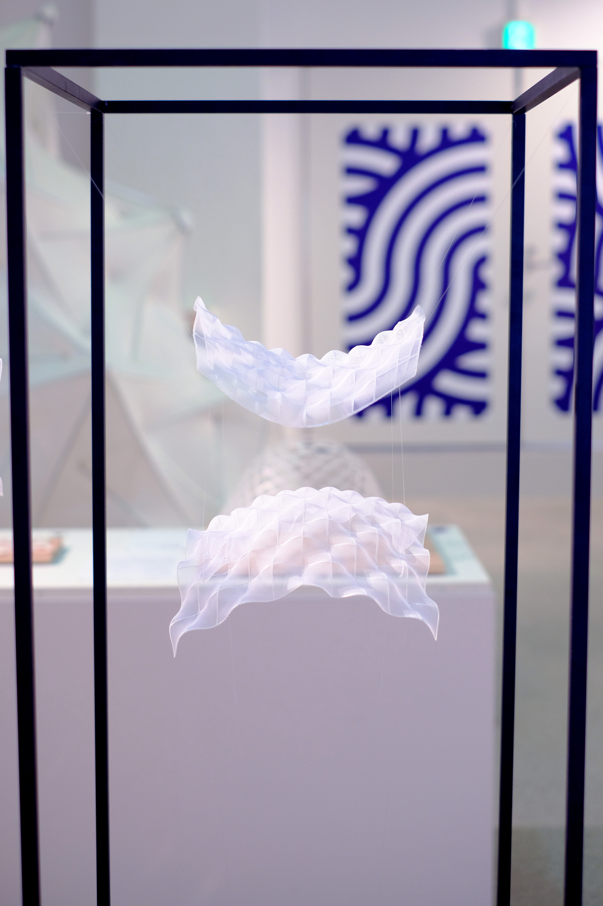

Active Textile - Freeform
2023
上條陽斗・舘知宏
めいっぱい引っ張った伸縮性の布と格子状に切り出したプラスチックシートを接着し、それから引っ張る力を解放すると、縮もうとする布と、縮むまいとする格子の拮抗によって、周期的な起伏が生じます。起伏の大きさは切り出した格子の大きさや幅によって変化します。起伏の大きさを、格子の面内での縮小率に読み替えれば、平面のシートからの縮み具合を格子の形状によってコントロールすることで、狙った曲面に沿うテキスタイルを作れるのではないかという発想に至ります。自由な曲面に沿うテキスタイルの設計手法に関する研究プロジェクトからいくつかの実例を紹介します。
keywords
ベンディングアクティブ構造、逆問題、自由曲面
発表
上條陽斗・舘知宏
受賞
日本建築学会第18回コロキウム構造形態の解析と創生 2023 若手優秀発表賞
展示
CONNECTING ARTIFACTS つながるかたち展03，駒場博物館，東京，2023
展示Webサイト
- 
逆問題を解く設計手法により、NURBS曲面で与えた曲面を近似する構造を製造できる。
複層化することで全長1m弱の大型の構造を実現している。